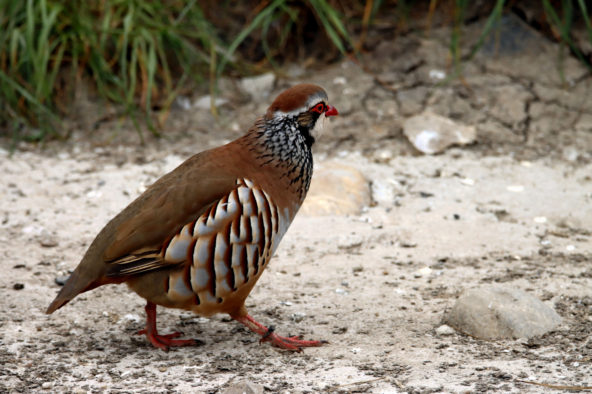

The Red-legged Partridge is a compact European gamebird with a grey back, barred flanks, a white throat bordered by black markings, red legs and a red bill. It is strongly associated with dry farmland, scrub, vineyards and open Mediterranean countryside. It usually walks or runs rather than flies unless disturbed.